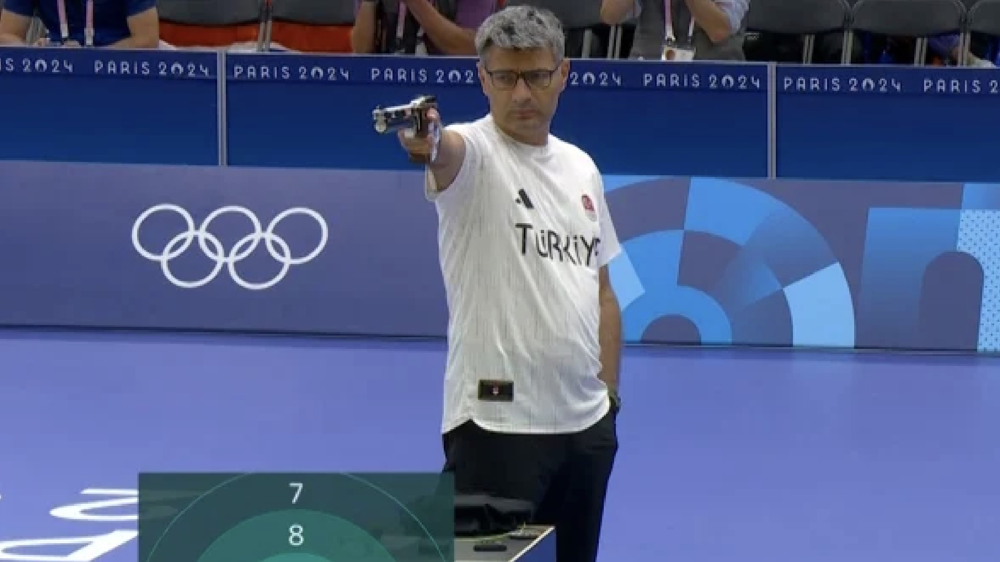

Guitarist dari Band Syner
Diterbitkan pada
Perkenalkan saya Dearen Kansil. Saya adalah guitarist di band Syner.
Guitarist dari Band Syner
Diterbitkan pada
Perkenalkan saya Dearen Kansil. Saya adalah guitarist di band Syner.

Atlet Muda Menembak Asal Bitung
Diterbitkan pada
Atlet muda asal Bitung berbagi prestasi menembak: medali perak 2018, nasional Balikpapan 2019, POPNAS 2023.

Mengenal Band Dream Theater
Diterbitkan pada
Dream Theater adalah band progressive metal yang terkenal dengan komposisi musik yang kompleks dan teknik permainan instrumen yang sangat tinggi.

Perkembangan Artificial Intelligence oleh OpenAI
Diterbitkan pada
Artificial Intelligence (AI) adalah teknologi yang memungkinkan komputer meniru kemampuan manusia seperti memahami bahasa dan menganalisis data.

Yusuf Dikeç: Atlet Menembak Peraih Medali Olimpiade
Diterbitkan pada
Yusuf Dikeç adalah atlet menembak asal Turki yang meraih medali perak pada Olimpiade Paris 2024 di nomor 10 meter air pistol mixed team.